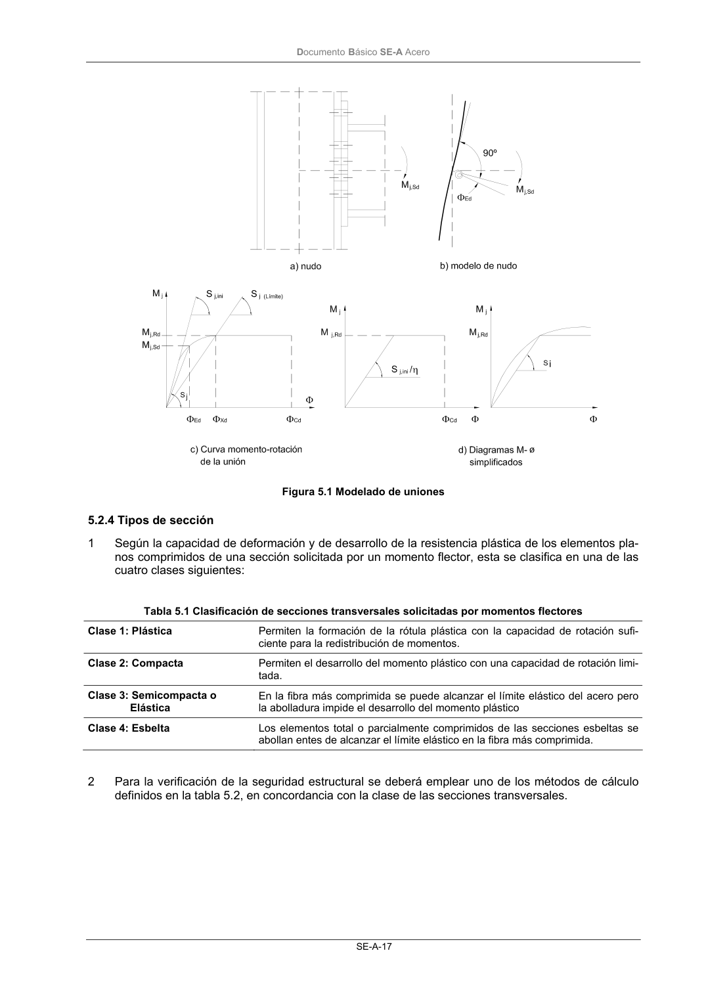

DB-SE-A · 5.2.3 Uniones entre elementos · versión 2007-10-23 · capa oficial
Formatos: JSON compacto · Markdown · PDF fuente
Ámbito del documento · texto del ámbito · documento y tablas
ID técnico a0043 · PDF pág. 18-19 · jerarquía no validada por persona · contrastado con el literal de la página 18 (candidato tipográfico); no validado por persona · padre: raíz
5.2.3 Uniones entre elementos 1 Para representar el enlace entre dos o más piezas se requieren modelos que representen adecua- damente la geometría (las posiciones de los extremos de las piezas unidas), y la resistencia y rigi- dez de la unión (de los elementos y regiones locales de las piezas que materializan el enlace). 2 En función de la resistencia las uniones pueden ser articulaciones, de resistencia total o de resis- tencia parcial. 3 Dependiendo de la rigidez las uniones pueden ser articuladas, rígidas o semirrígidas, según su ri- gidez a rotación sea nula, total o intermedia. 4 Los límites entre los distintos tipos se establecen en el capítulo de uniones; el proyectista adoptará las disposiciones precisas para clasificar la unión como articulada –permitiendo rotaciones apre- ciables sin la aparición de momentos relevantes- o rígida –asegurando mediante rigidización sufi- ciente la rotación conjunta de todas las secciones extremas de los elementos del nudo-, o para considerar la rigidez parcial de la unión en los modelos empleados en el análisis. 5 Los métodos de análisis global utilizados y las hipótesis adoptadas respecto al comportamiento de las uniones deben ser coherentes. En particular: a) cuando se realice un análisis global elástico y existan nudos de comportamiento semirrígido, se considerará el comportamiento de la unión en función de su rigidez. Debe tomarse, en ge- neral, la rigidez, Sj, correspondiente al momento de cálculo Mj.Sd en cada situación. Como sim- plificación: - si Mj,Sd≤ 2/3 Mj,Rd , donde Mj,Rd es la resistencia de cálculo de la unión, se podrá usar la rigi- dez inicial del nudo Sj, ini, (figura 5.1.c) - si Mj,Sd > 2/3 Mj,Rd , se podrá usar el valor Sj, ini /η donde: η = 2 para uniones viga-pilar η = 3 para otro tipo de unión b) cuando se realice un análisis global elastoplástico se debe considerar el comportamiento de la unión según su resistencia y rigidez. En este caso se podrá adoptar un diagrama bilineal sim- plificado como el indicado en la figura 5.1.d) para modelar el comportamiento de la unión. c) cuando se realice un análisis global rígido-plástico, para modelar el comportamiento de las uniones bastará considerar su resistencia. 6 Las uniones semirrígidas entre cada dos barras (figura 5.1.a) se podrán modelar como un resorte que une los ejes de las barras que concurren en el nudo (figura 5.1.b), que define las principales propiedades siguientes: a) momento resistente, Mj,Rd, que es el máximo valor en la curva momento rotación M-Φ. b) rigidez al giro, Sj. c) la capacidad de rotación ΦCd es el máximo valor de la rotación en la curva M-Φ (figura 5.1.c). d) la curva real M-Φ no es lineal, pudiéndose adoptar un diagrama bilineal (figura 5.1.d) o trili- neal, siempre que la curva simplificada quede por debajo de la más precisa. Podrán igualmente modelarse refiriéndolas a la rigidez de alguna de las barras que forman la unión, mediante técnicas de condensación estática. DocumentoBásico SE-A Acero SE-A-17 Figura 5.1 Modelado de uniones

PDF fuente redistribuible: copia fiel enlazada en esta página (SHA256 verificado).